Вакансии

 Жукова Наталья Александровна")
Обслуживание и монтаж электропроводки на производственных линиях. Работа по графику, официальное оформление.
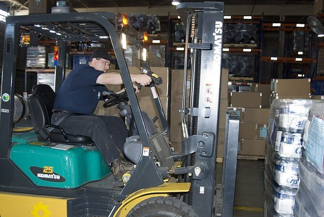
 Белова Инна Сергеевна")
Приём и отгрузка товара, ведение складского учёта. Обучение на месте.
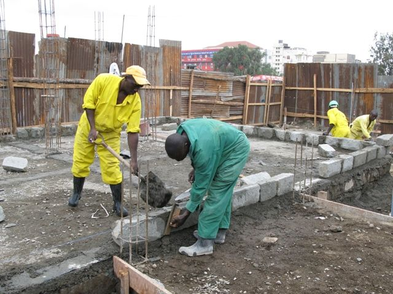
 Богданов Тимур Асланович")
Руководство монтажом строительного 3D-принтера на площадке. Вознаграждение — доля в готовом результате проекта.

 Петров Сергей Викторович")
Развитие платформы cooptech: новые разделы, интеграции с расширениями. Открытый код, гибкий график.
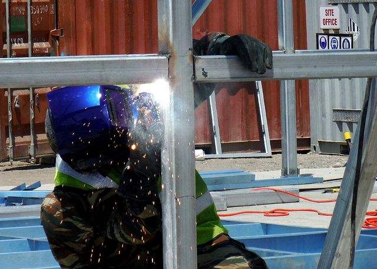
 Зимин Кирилл Дмитриевич")
Сварка металлоконструкций на объектах компании. Аттестация НАКС приветствуется, спецодежда и инструмент свои или наши.
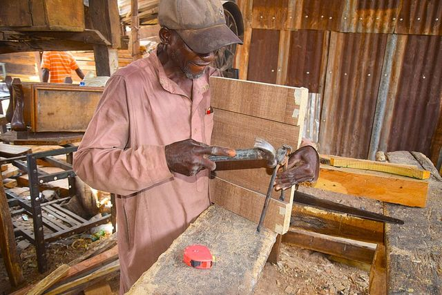
 Иванова Мария Петровна")
Изготовление мебели из массива на заказ: от раскроя до финишной отделки. Мастерская с полным парком станков.
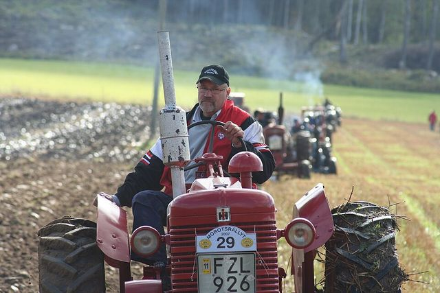
 Виноградов Денис Игоревич")
Сезонные полевые работы: вспашка, посев, уборка. Техника кооператива, проживание для иногородних.
 Смирнова Екатерина Андреевна")
Ведение учёта паевых взносов и займов пайщиков, отчётность. Возможна частичная удалёнка.
 Васильева Татьяна Михайловна")
Сопровождение кооперативов и НКО: уставы, договоры, споры. Часть клиентов — участники платформы.
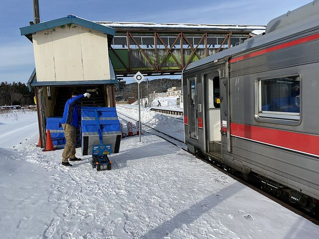
 Орлова Светлана Викторовна")
Доставка грузов кооператива по краю. Машина закреплённая, ремонт и топливо за счёт кооператива.
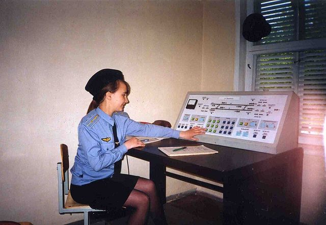
 Соколов Павел Дмитриевич")
Планирование маршрутов и контейнерных отправок, работа с таможенными брокерами.
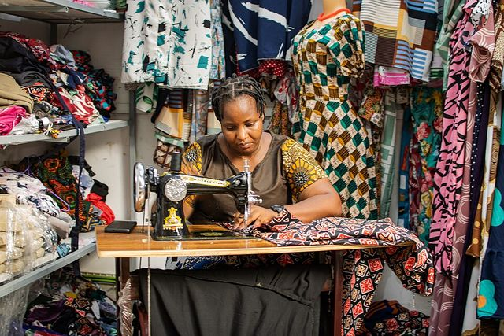
 Кузнецова Дарья Викторовна")
Пошив рабочей одежды для кооперативов платформы. Оборудованное рабочее место, гибкие смены.
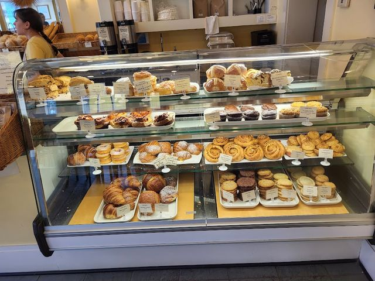
 Голубева Мария Александровна")
Десерты и выпечка для гостевого дома и кофейни кооператива. Смены 2/2, питание включено.
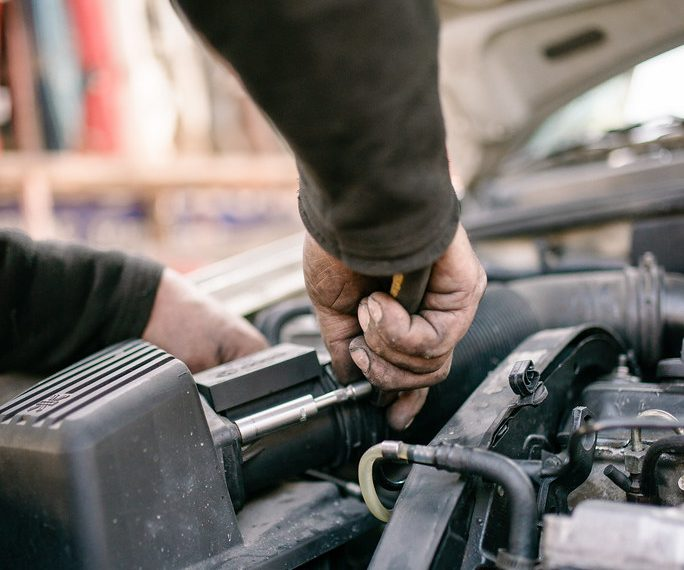
 Медведева Юлия Олеговна")
Ремонт и обслуживание легковых авто в артели. Оплата — оклад плюс процент от заказ-нарядов.
 Дмитриева Елена Игоревна")
Выезды в отдалённые посёлки: осмотры, вакцинация, забор анализов. Транспорт организации.
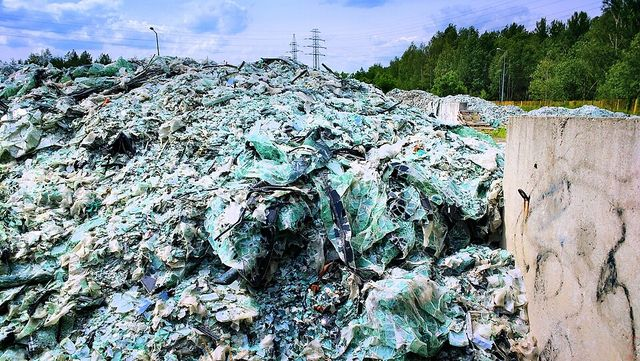
 Ерёмин Станислав Петрович")
Сортировка привезённого вторсырья на линии, работа сменами. Обучение и спецодежда за счёт организации.
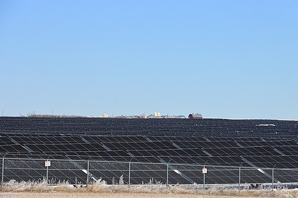
 Мельников Григорий Олегович")
Монтаж крышных солнечных станций у пайщиков кооператива. Часть вознаграждения — доля выработки.
 Павлова Виктория Андреевна")
Ведение соцсетей кооперативов-клиентов: контент-план, съёмка на месте, тексты.
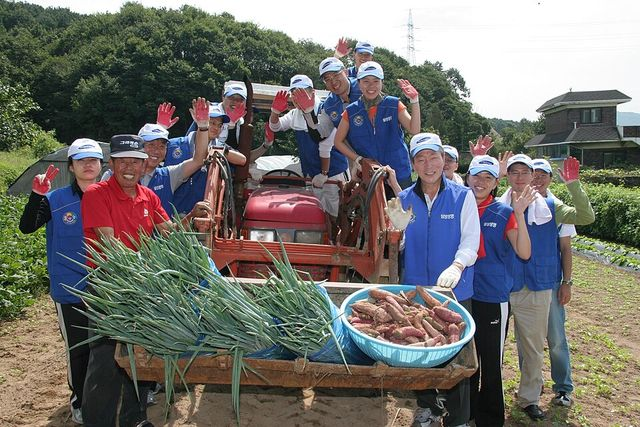
 Лаврова Светлана Игоревна")
Сбор и координация волонтёрских смен на городских акциях. Хороший старт для тех, кто хочет в НКО.
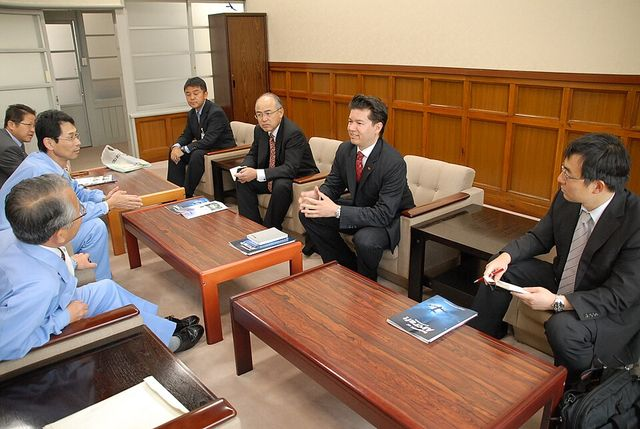
 Никитина Полина Романовна")
Подготовка заявок на гранты для проектов платформы и отчётность по выигранным.
 Морозова Анна Сергеевна")
Интерфейсы сервисов городского ДАО: карты инициатив, голосования, бюджет участия.
 Крылов Виталий Андреевич")
Контроль качества работ подрядчиков на объектах, ведение исполнительной документации.
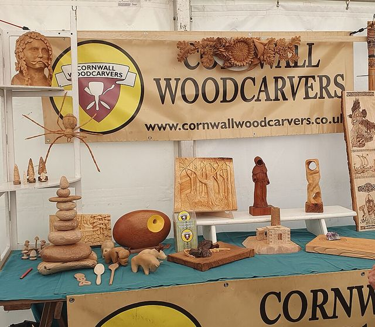
 Зайцев Роман Сергеевич")
Резьба наличников и сувенирной продукции артели. Можно работать в своей мастерской.
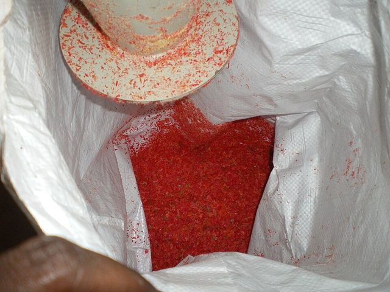
 Козлов Артём Викторович")
Настройка линии дробления и экструзии вторичного пластика, контроль параметров партии.

 Фёдоров Алексей Дмитриевич")
Ручное и автоматизированное тестирование кооперативных сервисов. Решения принимаются голосованием held-участников.
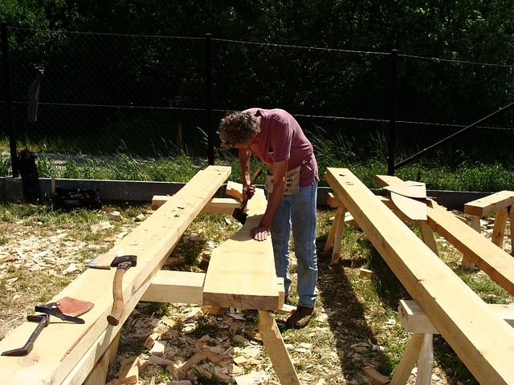
Погрузка-разгрузка, помощь бригаде на объектах агрокомплекса. Выплаты еженедельно.
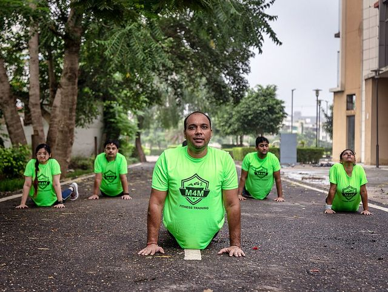
Бесплатные дворовые тренировки для подростков на площадках района. Занятия вечером и в выходные.
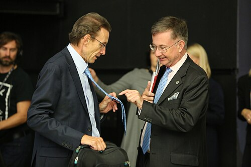
Помощь новым кооперативам: устав, паевая политика, финмодель, первые полгода сопровождения.
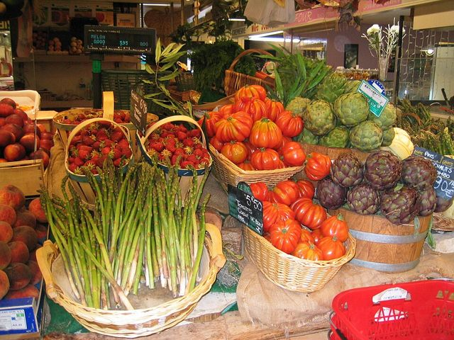
Продажа овощей и молочной продукции кооператива на рынке. Обучение и медкнижка за счёт кооператива.
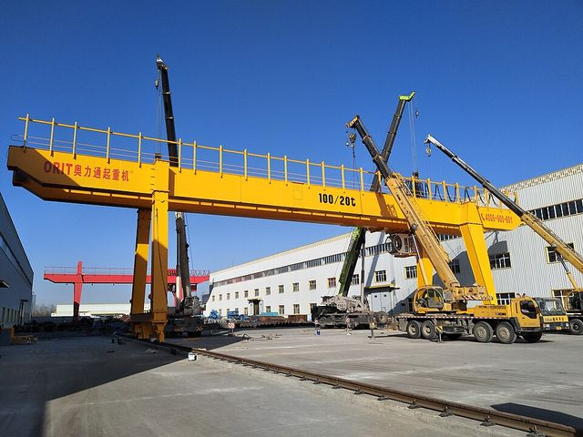
Перегрузка контейнеров и сыпучих грузов в речном порту. Удостоверение крановщика обязательно.
 Гришин Олег Валентинович")
Развоз пожилых подопечных фонда по врачам и социальным службам. Машина фонда, график по будням.
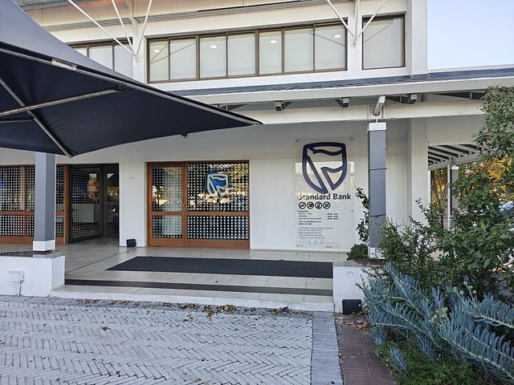
Консультирование пайщиков по займам, оценка платёжеспособности, сопровождение договоров.
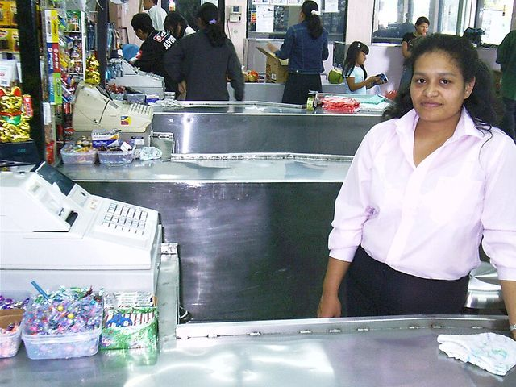
Работа на кассе кооперативного магазина, смены 2/2. Скидка сотрудникам на весь ассортимент.
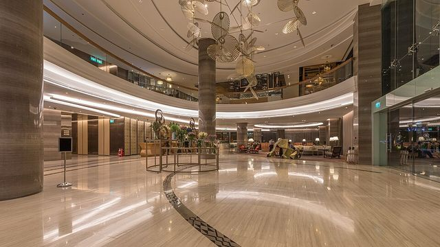
 Дашкевич Данил Игоревич")
Заселение гостей, бронирования, координация уборки. Проживание для иногородних предоставляется.
Приём в амбулатории организации и выезды в сёла области. Сертификат по специальности обязателен.
 Новиков Максим Олегович")
Съёмка коротких роликов о кооперативах и производствах: интервью, процессы, монтаж.
Распил круглого леса на пилораме артели, контроль геометрии и сортировка пиломатериала.
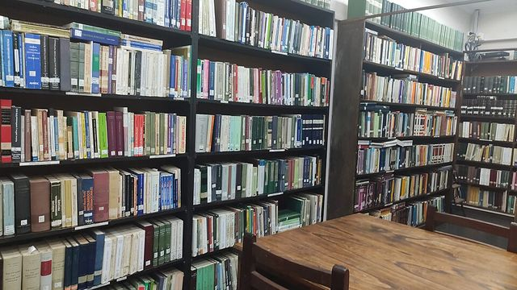
Подготовка документов, выписки из реестров, сопровождение сделок под руководством юриста.
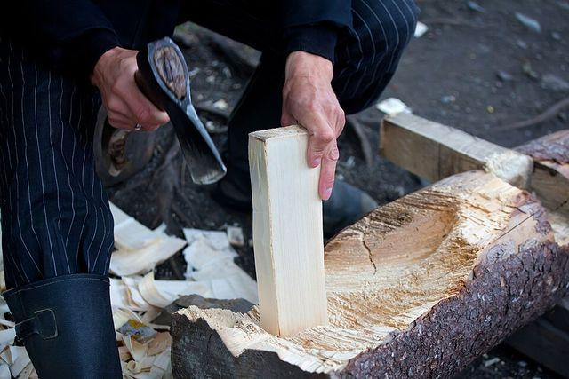
Занятия по работе с деревом для подростков в общественной мастерской, 2–3 группы в неделю.
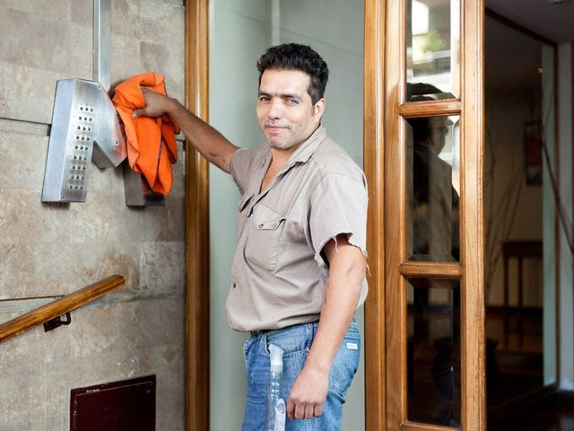
 Волков Игорь Николаевич")
Хозяйственные вопросы дома: подрядчики, показания, мелкий ремонт. Часть оплаты — зачёт взносов ЖСК.
 Лебедева Ольга Игоревна")
Смены в диспетчерской кооператива: мониторинг выработки и заявок на подключение.

Подготовка смеси, калибровка портала и печать стен на объекте. Обучение на площадке проекта.

Ведение циклов выращивания зелени и томатов, контроль микроклимата и питания растений.

Организация графика вывоза и общение с жителями районов. Пока волонтёрство, после запуска — доля.

 Игнатьева Оксана Романовна")
Консультации по круглогодичному выращиванию овощей в теплице проекта. Доля урожая для консультанта и семьи.

Помощь резидентам мастерской с заказами и обслуживание станков. Часть вознаграждения — свободный доступ к оборудованию.
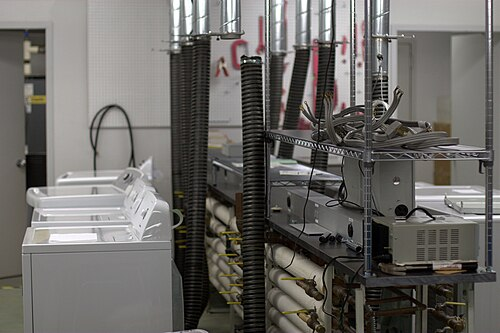
Приём белья, загрузка машин, мелкое обслуживание техники. График по договорённости.

Встреча резидентов, бронь переговорных, порядок в пространстве. Смены по 6 часов.

Отделка залов дома культуры перед открытием. Материалы и инструмент от проекта.
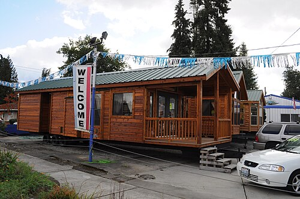
 Попов Артур Русланович")
Сборка каркасов и обшивка модулей на площадке. Часть вознаграждения — доля в проекте.
Монтаж и подключение фотомодулей на поле кооператива, пусконаладка инверторов.
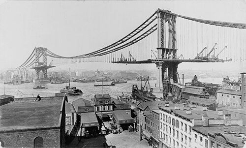
Сварочные работы на пролётах моста. Вахтовый график, проживание за счёт проекта.
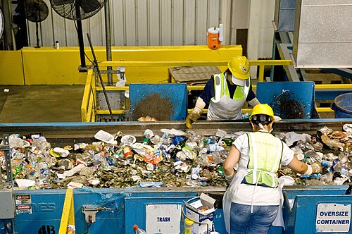
Приём и взвешивание вторсырья от жителей, учёт в системе проекта. Решения по правилам приёма — голосованием ДАО.
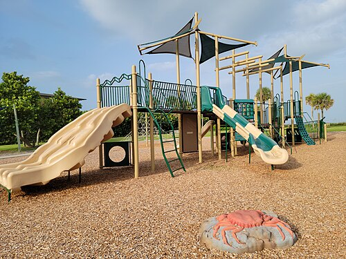
Выходные субботники по монтажу игрового оборудования. Инструмент и обед от проекта.
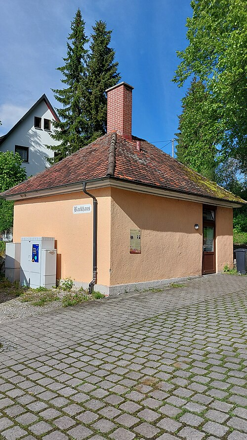
 Семёнов Николай Петрович")
Ночные и утренние замесы, подовый хлеб на закваске. Пайщики пекарни получают долю выручки.
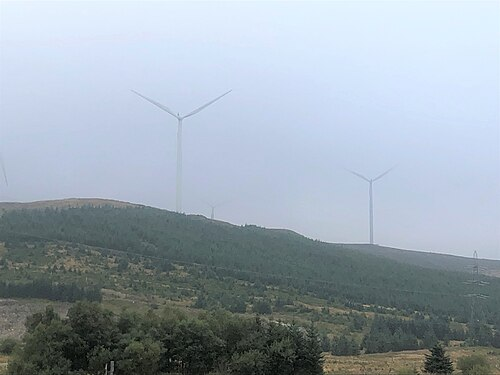
Монтаж и регламентное обслуживание малых ветроустановок у фермеров-пайщиков.
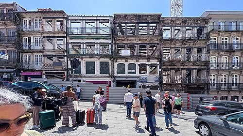
Восстановление фасадного декора купеческого дома. Требуется опыт работ на объектах наследия.

Дежурства в летней читальне, выдача книг, помощь с детскими чтениями по выходным.
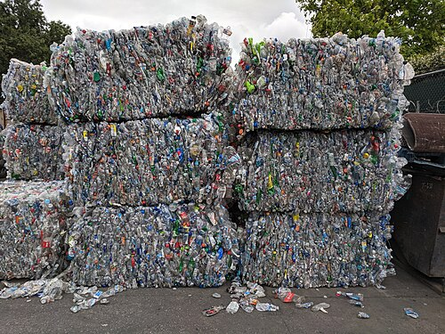
Дробление и прессование пластика, подготовка сырья для литья изделий. Обучение на месте.
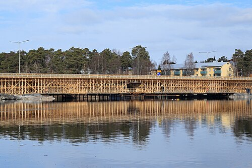
Рабочая документация пешеходного моста, согласования. Смета и этапы утверждаются голосованием ДАО.
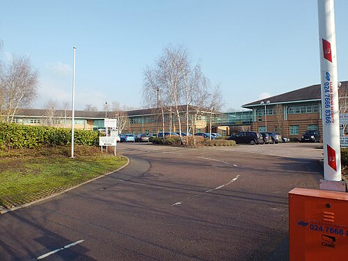
Составление расписания кружков, приглашение менторов, сопровождение команд-участников.
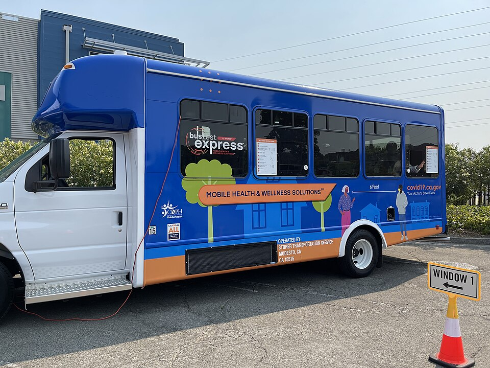
Приём жителей отдалённых сёл в мобильном медпункте, маршрут — неделя в разъездах, неделя дома.

Занятия по программированию для подростков, две группы по вечерам. Программа готова, нужен ведущий.
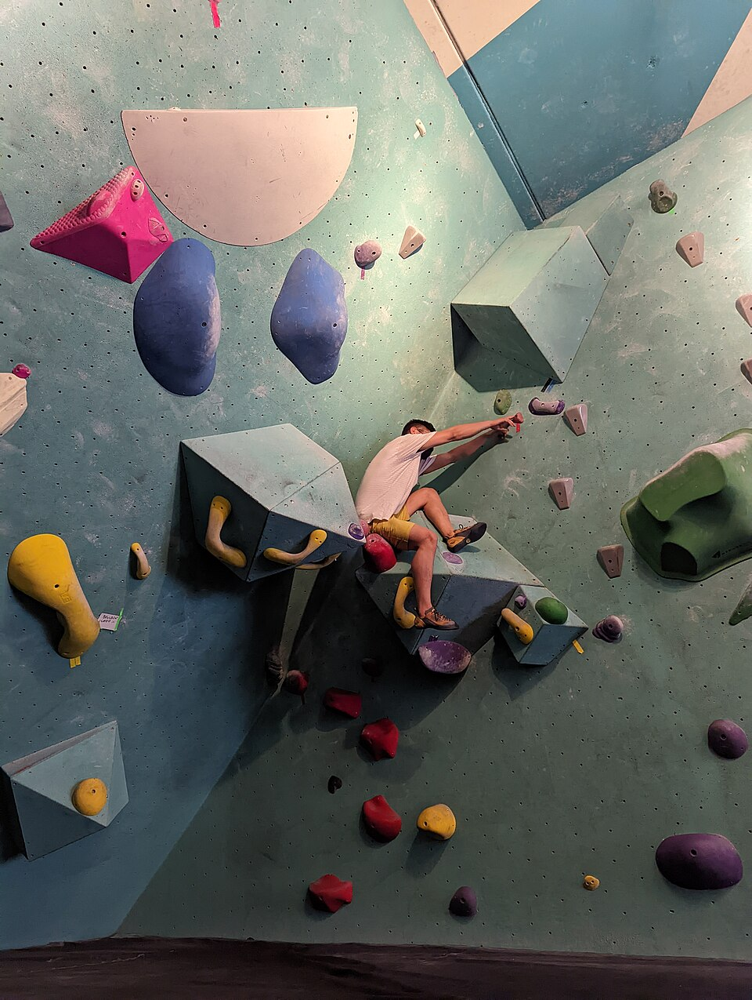
Ведение групп начинающих, страховка и инструктаж. Часть оплаты — свободный доступ на скалодром.
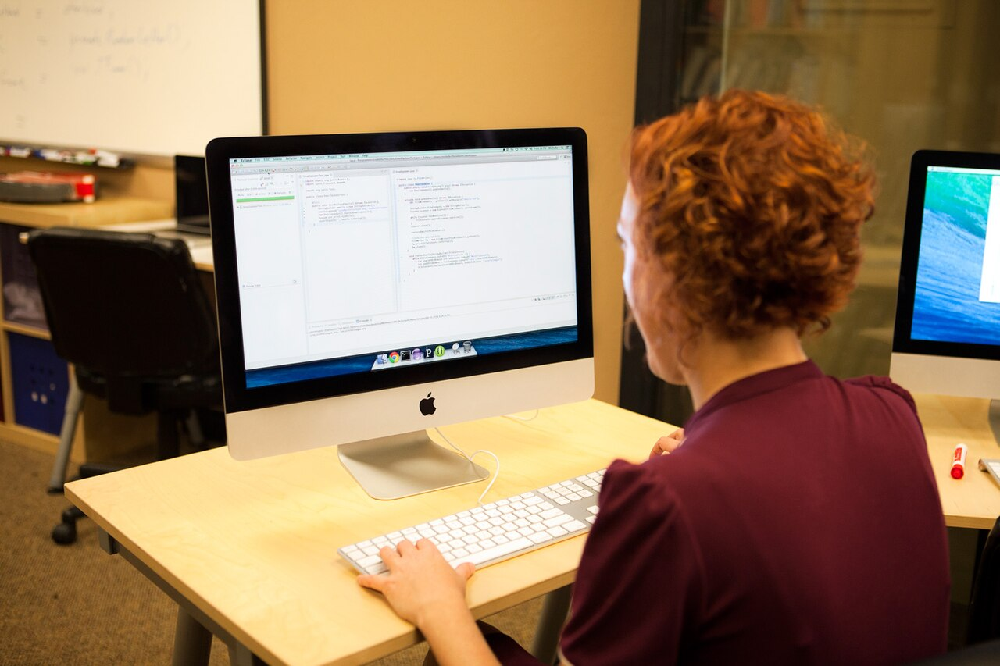
Интерфейсы открытой CRM: пайщики, взносы, склад. Код в открытом репозитории, релизы — по решению ДАО.
Нужна помощь с небольшим pet-проектом. Готов обменяться навыками — электромонтаж или кирпичная кладка в обмен на код.
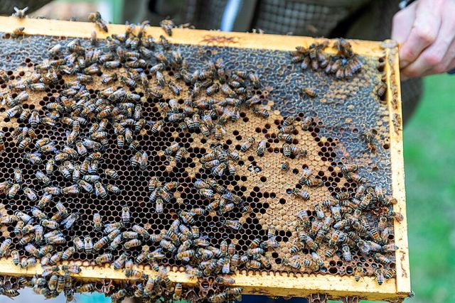
Нужен помощник на летний медосбор: качка мёда, уход за ульями. Научу с нуля, расчёт — частью мёда.
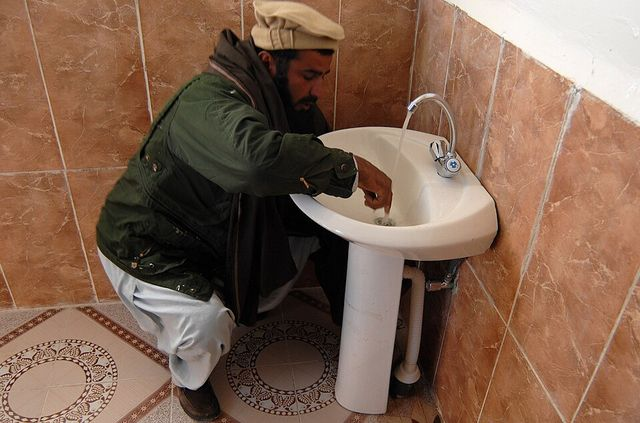
Замена стояка и подводки в квартире, материалы куплены. Нужен мастер с инструментом на один день.
Съёмка семейного юбилея, 4 часа, обработка 40 кадров. Приветствуется репортажный стиль.
Подготовка сына к ОГЭ по информатике, два занятия в неделю очно или онлайн.
Кладка стен бани из кирпича 5×4 м, фундамент готов. Материалы на участке, сроки — месяц.